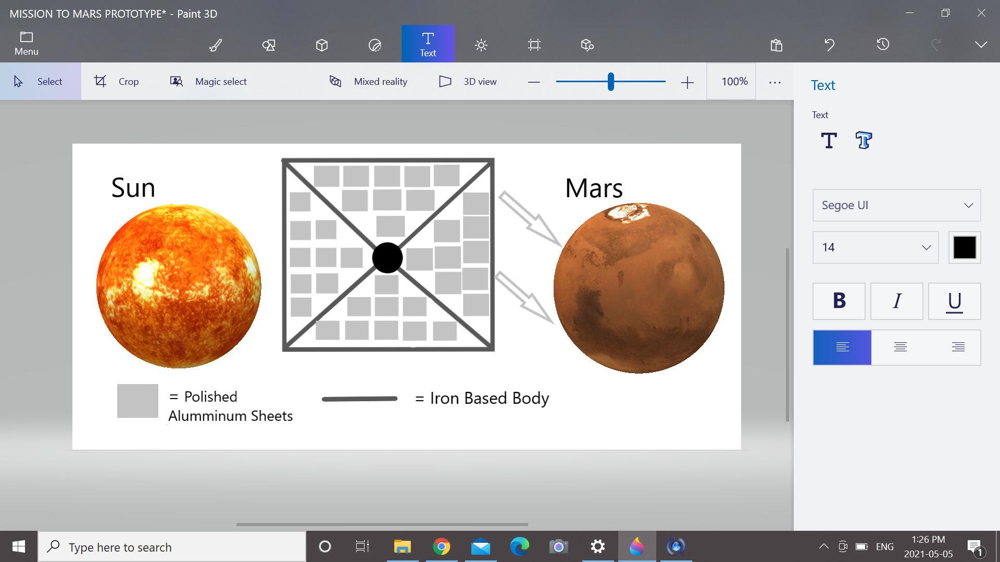

Our problem is that Mars' atmosphere does not currently support human life.
We will deploy Satellites to reflect heat onto Mars’ poles melting ice that will release hydrogen into the atmosphere. Then we will introduce Cyanobacteria to eat and transfer the CO2 in the atmosphere and convert it into oxygen.
We will deploy space mirrors to reflect sunlight onto the ice capped poles of mars to release hydrogen into the atmosphere and terraform it over time into an earth-like atmosphere. We will do this because Mars's atmosphere is currently uninhabitable without a manmade dome, the intent of terraforming Mars is to create an environment where plants and animals can freely live in and traverse throughout the Mars landscape with no extra equipment needed. The space mirrors we deploy will be 150 meters across and we will deploy 300 of them. We will create these space mirrors once we get to Mars using by harnessing the material deposits on Mars brought to the dome by the automated robotic mining crew designed by Quibuleous Shiboinker our head robotics astronaut.
Our technology, The Reflecterator, will have an iron body with polished aluminum reflectors covering the face of the technology. It will be a somewhat simplistic design that will be concave in order to redirect and focus the sunlight onto Mars in a precise fashion. The Reflecterators will be made on Mars and deployed from the Mars Reflecterator Deployment Station.
Shiga, David. “Space Mirrors Could Create Earth-like Haven on Mars.” New Scientist, 14 Nov. 2006, www.newscientist.com/article/dn10573-space-mirrors-could-create-earth-like-haven-on-mars/.
Cuthbertson, Anthony. “Elon Musk Says Giant Mirrors Will Warm up Mars and Make It Habitable for Humans.” The Independent, Independent Digital News and Media, 21 Aug. 2019, www.independent.co.uk/life-style/gadgets-and-tech/news/elon-musk-mars-nuke-humans-live-mirrors-spacex-a9072631.html.